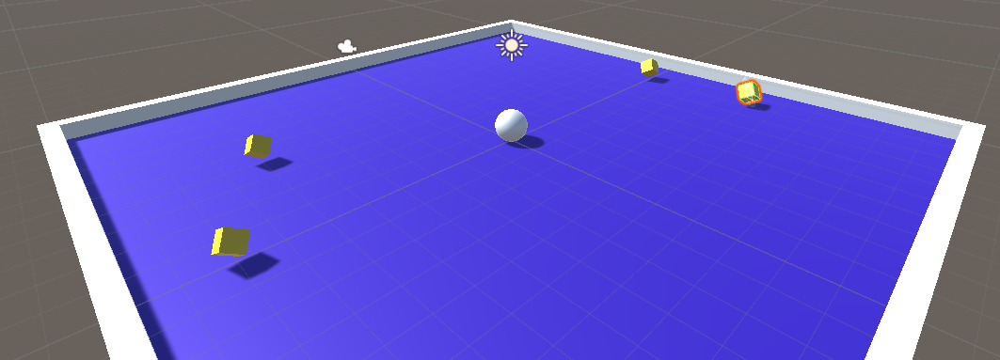
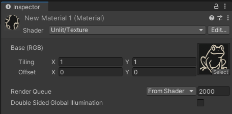
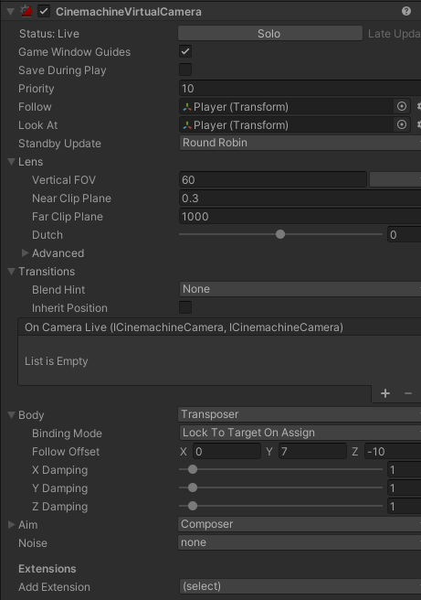
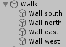
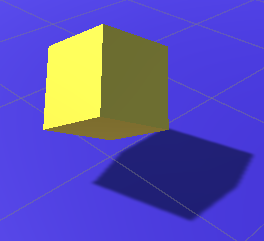
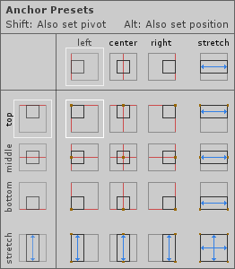

Yleistä
Tässä demossa laaditaan ensimmäinen 3d-peli. Tarkoitus on tehdä peli jossa liikutetaan palloa ja kerätään pisteitä. Tutustutaan erioihin 2d ja 3d pelien välillä.

3D Objektit
- Aloita uusi projekti, valitse nyt 3d-projekti.
- Lisää uusi taso (GameObject / 3d Object / Plane), nimä 'Ground'. Varmista, että tason sijainti on (0,0,0). Tee tason kooksi Scale-attribuuteilla 2 x 1 x 2.
- Voit ottaa Scene-ikkunan Gizmos-valikosta gridin pois näkyvistä
- Lisää pelihahmoksi Sphere, nimeä 'Player'. Nosta pallo 0.5 ylöspäin jotta se ei ole haudattuna tasoon.
- Lisää kansio 'Materials', lisää sinne uusi materiaali (hiiren oikea / Material), nimeä Background. Kohdasta 'Albido' voit määrittää materiaalin värin.
- Raahaa seuraavaksi Background objektin Ground päälle ja tason värin tulisi muuttua.
- Jos haluat käyttää kuvaa materiaalissa määritä Shader / Unit/Texture ja raahaa kuva kohtaan Texture

- Jos haluat käyttää kuvaa materiaalissa määritä Shader / Unit/Texture ja raahaa kuva kohtaan Texture
- Valitse Directional Light ja säädä sen Rotation x ja y -arvojen avulla valaistus haluamaksesi (vaihda Scenen näkymä Scenen ja Gamen välillä jos et näe eroa).
Pelaajan liikuttaminen
- Lisää aluksi Rigidbody Player-objektille. Samalla objektille ilmestyy myös Sphere Collider.
- Lisää Script-kansio ja lisää sinne PlayerController.
Lisää attribuutti Rigidbody:
private Rigidbody rb;
Start()-metodissa alustetaan Rigidbody:void Start() { rb = GetComponent<Rigidbody>(); }Liikuttaminen tapahtuu FixedUpdate-metodissavoid FixedUpdate() { float moveHorizontal = Input.GetAxis("Horizontal"); float moveVertical = Input.GetAxis("Vertical"); Vector3 move = new Vector3(moveHorizontal, 0, moveVertical); rb.AddForce(move); }Kokeile toimintaa. Liikkuu melko hitaasti? Lisää vieläpublic float speedja kerro liike sillä.
Kamera
- Lisää kameralle uusi skripti, CameraController. Tarkoitus on koodissa säätää sitä miten kamera seuraa pelaajaa.
-
Tarkoitus on, että kamera on tietyn välimatkan päässä pelaajasta. Tämä välimatka (offset) pysyy samana koko ajan. Kun pelaaja liikkuu niin liikutetaan myös kameraa.
public class CameraController : MonoBehaviour { public GameObject player; private Vector3 offset; void Start() { offset = transform.position - player.transform.position; } // LateUpdate tehdään muiden Update()-metodien jälkeen void LateUpdate() { transform.position = player.transform.position + offset; } }
Toinen vaihtoehto on käyttää Cinemachine-lisäosaa. Voit asentaa sen Window / Package Manager -valikon kautta.
- Lisää hierarchy-ikkunalle uusi Virtaul Camera
- Aseta Virtual Cameran attribuuteista Follow ja Target osoittamaan pelaajaan. Muuta Body / Follow Offset -muuttujan Y-arvo sopivaksi.

Seinä
- Lisää uusi Gameobject, nimeä se Wall.
- Lisää uusi Cube (GameObject / 3d / Cube) ja nimeä se West Wall, siirrä tämä Wall GameObjectin sisälle. Tee seinästä sopivan kokoinen.
- Tee kopioimalla toinen seinä ja siirrä se paikalleen. Tämän jälkeen tee jälkimmäiset kaksi seinää samaan tapaan. Kokeile pelin toimintaa. Sopiva koko on esimerkiksi 20.5 x 0.5f.

Pisteet
- Lisää peliin uusi Cube, nimeä esim. PickUp.
- Muuta sen kokoa: nosta Position y-akselista 0.5, muuta Scale 0.5 x 0.5 x 0.5 ja Rotation 45 x 45 x 45. Kuution pitäisi nyt olla ilmassa ja kyljellään.

- Lisää skripti Rotator ja lisää kuutiollesi:
void Update() { // muutetaan Rotation-attribuutteja transform.Rotate(new Vector3(15, 30, 45) * Time.deltaTime); }Testaa toimintaa, kuution pitäisi pyöriä kauniisti. - Lisää uusi kansio Prefabs ja tee pistekuutiostasi Prefab.
- Lisää uusi tyhjä Game object ja nimeä se PickUps, tehdään tästä äiti kaikille pisteille. Raahaa piste tämän äidin sisälle.
- Lisää pisteitä sopiva määrä ja asettele pelikentällesi.
- Lisää PickUp-prefabille sopiva väri.
- Lisää pisteille tag "pickup" ja aseta niille päälle isTrigger. Tämän jälkeen lisää OnTriggerEnter-metodi pelaajalle:
void OnTriggerEnter(Collider col) { if (col.gameObject.tag == "pickup") { col.gameObject.SetActive(false); } }
Lisäykset
Ajan näyttäminen
- Lisää pelille yksinkertainen käyttöliittymä jossa näytetään juokseva kellonaika (alkaa 0:00 ja mittaisi kauanko menee pelin läpipelaamiseen) ja pisteet.
- Ajan esittämisestä löytyy esimerkki Timer-esimerkki tietovisan yhteydessä. Nyt tarkoitus lähteä nollasta ja näyttää tarkempi aika.
- Lisää näkyviin laskuri joka kasvaa aina kun pelaaja kerää pisteen.
- Voit ankkuroida Text-objektin vasempaan tai oikeaan yläreunaan (Anchor, huomaa Shift ja Alt-painikkeiden käyttö).

Pelin lopettaminen
- Kun pelaaja on kerännyt kaikki pisteet tulisi pelin päättyä. Pisteiden tullessa täyteen siirry Game over-skenelle, näytä täällä pelaajan käyttämä aika. Yritä saada näkyviin myös kaikkien aikojen nopein aika.